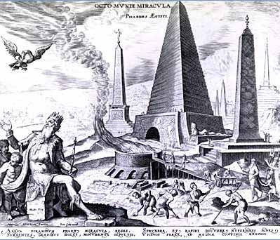

The Seven Wonders
Great Pyramid of Giza
- Date of construction:
- 2584–2561 BC
- Builders:
- Egyptians
- Location:
- Giza Necropolis, Egypt
Hanging Gardens of Babylon
- Date of construction:
- Circa 600 BC
- Builders:
- Babylonians
- Location:
- Nineveh, Iraq
Temple of Artemis
- Date of construction:
- Circa 550 BC
- Builders:
- Greeks
- Location:
- Selçuk, Turkey
Statue of Zeus at Olympia
- Date of construction:
- 435 BC
- Builders:
- Greeks
- Location:
- Olympia, Greece
Mausoleum at Halicarnassus
- Date of construction:
- 351 BC
- Builders:
- Persians
- Location:
- Bodrum, Turkey
Colossus of Rhodes
- Date of construction:
- 292–280 BC
- Builders:
- Greeks
- Location:
- Rhodes, Greece
Lighthouse of Alexandria
- Date of construction:
- Circa 280 BC
- Builders:
- Ptolemaic Egyptians
- Location:
- Alexandria, Egypt
Buy tickets
Come explore the ancient wonders with our amazing teleportation technology that jumps you around the world.
$15 for adults $5 for kidsBecome a member
Is one visit not enough?
Join our yearly program for unlimited access.
$99 for adults $39 for kids ---Now playing on the large screen
This week at the museum
-
Saturday & Sunday
Atlantis city tours
Underwater explorer: see outside the bubble
-
Monday
Try this out: have fun building your own ancient wonder
Amazing architecture: explore the science of how the pyramids were built
-
Tuesday
Awesome art: witness art in action as a marble sculpture is born
Gold rush: learn about the metal and why it was so coveted
-
Wednesday
Try this out: wear clothes that the ancients wore
Gardenology: learn to plant and maintain amazing gardens
-
Thursday
Amazing architecture: explore the science of buildings
Gardenology: the science behind trees and the environment
-
Friday
Atlantis city tours
Awesome art: witness a full mosaic floor under construction